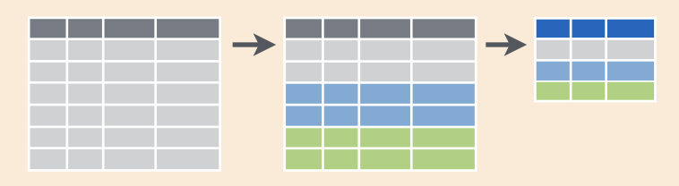

Capítulo 5 Manipulación de datos ordenados
El paquete dplyr provee una enorme cantidad de funciones útiles para manipular y analizar datos de manera intuitiva y expresiva.
El espíritu detrás de dplyr es que la enorme mayoría de los análisis, por más complicados que sean, involucran combinar y encadenar una serie relativamente acotada de acciones (o verbos). En este curso vamos a centrarnos las cinco más comunes:
select(): selecciona columnas de una tabla.filter(): selecciona (o filtra) filas de una tabla a partir de una o más condiciones lógicas.group_by(): agrupa una tabla en base al valor de una o más columnas.mutate(): agrega nuevas columnas a una tabla.summarise(): calcula estadísticas para cada grupo de una tabla.
dplyr y tablas dinámicas:
A grosso modo, las operaciones de dplyr permiten hacer en R lo que se hace en tablas dinámicas (pivot tables) en Excel.
filter() vendría a ser como la sección de “Filtros”, group_by(), la sección de “Filas”, select(), la sección de “Columnas” y summarise(), la parte de “Valores”.
Primer desafío:
Te dieron una tabla con datos de cantidad mensual de visitantes residentes y visitantes no residentes para cada provincia.
Las columnas son: año, mes, provincia, visitantes_residentes y visitantes_no_residentes.
En base a esos datos, te piden que calcules la proporción promedio de visitantes que son residentes para cada provincia en enero.
¿En qué orden ejecutarías estos pasos para obtener el resultado deseado?
- usar
summarise()para calcular la estadísticamean(proporcion_residentes)para cadaprovincia - usar
group_by()para agrupar por la columnaprovincia - usar
mutate()para agregar una columna llamadaproporcion_residentesque seavisitantes_residentes/(visitantes_residentes + visitantes_no_residentes). - usar
filter()para seleccionar solo las filas donde la columnameses igual a 1.
Para usar dplyr primero hay que instalarlo (esto hay que hacerlo una sola vez por computadora) con el comando:
y luego cargarlo en memoria con
Volvé a cargar los datos de turistas por edad (para un recordatorio, podés ir a Lectura de datos ordenados):
5.1 Seleccionando columnas con select()
Para quedarse únicamente con las columnas de índice de tiempo y turistas, usá select()
## # A tibble: 180 × 2
## indice_tiempo turistas
## <chr> <dbl>
## 1 2012-01 2700561
## 2 2012-01 3143845
## 3 2012-01 3234308
## 4 2012-01 2126707
## 5 2012-01 1268445
## 6 2012-04 957231
## 7 2012-04 1296808
## 8 2012-04 1377356
## 9 2012-04 1021227
## 10 2012-04 771842
## # … with 170 more rows¿Dónde quedó este resultado?
Si te fijás en la tabla turistas_edad, su formato no cambió, sigue teniendo todas las columnas originales a pesar de nuestro select:
## # A tibble: 180 × 3
## indice_tiempo edad turistas
## <chr> <chr> <dbl>
## 1 2012-01 Menores de 14 2700561
## 2 2012-01 14 a 29 3143845
## 3 2012-01 30 a 44 3234308
## 4 2012-01 45 a 59 2126707
## 5 2012-01 60 o mas 1268445
## 6 2012-04 Menores de 14 957231
## 7 2012-04 14 a 29 1296808
## 8 2012-04 30 a 44 1377356
## 9 2012-04 45 a 59 1021227
## 10 2012-04 60 o mas 771842
## # … with 170 more rowsselect() y el resto de las funciones de dplyr siempre generan una nueva tabla y nunca modifican la tabla original.
Para guardar la tabla con las dos columnas indice_tiempo y turistas tenés que asignar el resultado a una nueva variable.
## # A tibble: 180 × 2
## indice_tiempo turistas
## <chr> <dbl>
## 1 2012-01 2700561
## 2 2012-01 3143845
## 3 2012-01 3234308
## 4 2012-01 2126707
## 5 2012-01 1268445
## 6 2012-04 957231
## 7 2012-04 1296808
## 8 2012-04 1377356
## 9 2012-04 1021227
## 10 2012-04 771842
## # … with 170 more rows
Cómo funciona select()
5.2 Filtrando filas con filter()
Ahora podés usar filter() para quedarte con sólo unas filas.
Por ejemplo, para quedarse con los turistas menores de 14 años
## # A tibble: 36 × 3
## indice_tiempo edad turistas
## <chr> <chr> <dbl>
## 1 2012-01 Menores de 14 2700561
## 2 2012-04 Menores de 14 957231
## 3 2012-07 Menores de 14 1221911
## 4 2012-10 Menores de 14 1172970
## 5 2013-01 Menores de 14 2604040
## 6 2013-04 Menores de 14 942360
## 7 2013-07 Menores de 14 1341895
## 8 2013-10 Menores de 14 1382380
## 9 2014-01 Menores de 14 2706215
## 10 2014-04 Menores de 14 1006238
## # … with 26 more rowsLa mayoría de los análisis consisten en varios pasos que van generando tablas intermedias (en el primer desafío usaste 4 pasos para calcular la proporción media de visitantes residentes)
La única tabla que te interesa es la última, por lo que ir asignando variables nuevas en cada paso intermedio es tedioso y poco práctico.
Para eso se usa el operador ‘pipe’ (%>%).
El operador ‘pipe’ (%>%) agarra el resultado de una función y se lo pasa a la siguiente.
Esto permite escribir el código como una cadena de funciones que van operando sobre el resultado de la anterior.
Las dos operaciones anteriores (seleccionar tres columnas y luego filtrar las filas correspondientes a Argentina) se pueden escribir uno después del otro y sin asignar los resultados intermedios a nuevas variables de esta forma:
## # A tibble: 36 × 2
## indice_tiempo turistas
## <chr> <dbl>
## 1 2012-01 2700561
## 2 2012-04 957231
## 3 2012-07 1221911
## 4 2012-10 1172970
## 5 2013-01 2604040
## 6 2013-04 942360
## 7 2013-07 1341895
## 8 2013-10 1382380
## 9 2014-01 2706215
## 10 2014-04 1006238
## # … with 26 more rowsLa forma de “leer” esto es “Tomá la variable turistas_edad, después aplicale s filter(edad == "Menores de 14"), después aplicale fselect(indice_tiempo, turistas)”.
Cómo vimos, el primer argumento de todas las funciones de dplyr es el data frame sobre el cual van a operar, pero notá que en las líneas con select() y filter() no escribís la tabla explícitamente.
Esto es porque la pipe implícitamente pasa el resultado de las líneas anteriores como el primer argumento de la función siguiente.
Toma el data frame turistas_edad y se lo pasa al primer argumento de select().
Luego el data frame resultante de esa operación pasa como el primer argumento de la función filter() gracias al %>%.
Tip:
En RStudio podés escribir %>% usando el atajo de teclado Ctr + Shift + M.
¡Probalo!
5.3 Agrupando y reduciendo con group_by() %>% summarise()
Si querés calcular la cantidad promedio de turistas por cada rango de edad, tenés que usar el combo group_by() %>% summarise().
Es decir, primero agrupar la tabla según la columna edad y luego calcular el promedio de turistas para cada grupo.
Para agrupar la tabla países según el continente usamos el siguiente código:
## # A tibble: 180 × 3
## # Groups: edad [5]
## indice_tiempo edad turistas
## <chr> <chr> <dbl>
## 1 2012-01 Menores de 14 2700561
## 2 2012-01 14 a 29 3143845
## 3 2012-01 30 a 44 3234308
## 4 2012-01 45 a 59 2126707
## 5 2012-01 60 o mas 1268445
## 6 2012-04 Menores de 14 957231
## 7 2012-04 14 a 29 1296808
## 8 2012-04 30 a 44 1377356
## 9 2012-04 45 a 59 1021227
## 10 2012-04 60 o mas 771842
## # … with 170 more rowsA primera vista parecería que la función no hizo nada, pero fijate que el resultado ahora dice que tiene grupos (“Groups:”), y nos dice qué columna es la que agrupa los datos (“edad”) y cuántos grupos hay (“5”). Las operaciones subsiguientes que le hagamos a esta tabla van a hacerse para cada grupo.
Para ver esto en acción, usá summarise() para computar el promedio de turistas
## # A tibble: 5 × 2
## edad turistas_promedio
## <chr> <dbl>
## 1 14 a 29 1440779.
## 2 30 a 44 1530064.
## 3 45 a 59 1242697.
## 4 60 o mas 1033486.
## 5 Menores de 14 1368313.¡Tadá!
summarise() devuelve una tabla con una columna para la edad y otra nueva, llamada “turistas_promedio” que contiene el promedio de turistas para cada grupo.
Esta operación es equivalente a esta tabla dinámica en Excel:
group_by() permite agrupar en base a múltiples columnas y summarise() permite generar múltiples columnas de resumen.
El siguiente código calcula la cantidad promedio de turistas y su desvío estándar para cada continente y cada año.
turistas_edad %>%
group_by(edad, mes = substr(indice_tiempo, 6, 7)) %>%
summarise(turistas_promedio = mean(turistas),
turistas_desvio = sd(turistas))## `summarise()` has grouped output by 'edad'. You can override using the `.groups` argument.## # A tibble: 20 × 4
## # Groups: edad [5]
## edad mes turistas_promedio turistas_desvio
## <chr> <chr> <dbl> <dbl>
## 1 14 a 29 01 2432791. 439326.
## 2 14 a 29 04 889256. 421702.
## 3 14 a 29 07 1239470. 508496.
## 4 14 a 29 10 1201600. 310893.
## 5 30 a 44 01 2571253. 411656.
## 6 30 a 44 04 954923. 419869.
## 7 30 a 44 07 1289021. 454895.
## 8 30 a 44 10 1305058. 301415.
## 9 45 a 59 01 1955239. 119285.
## 10 45 a 59 04 826473. 319558.
## 11 45 a 59 07 1088687. 421866.
## 12 45 a 59 10 1100391. 245137.
## 13 60 o mas 01 1410029. 196945.
## 14 60 o mas 04 827572. 323722.
## 15 60 o mas 07 931603. 364683.
## 16 60 o mas 10 964739. 278363.
## 17 Menores de 14 01 2452844. 284910.
## 18 Menores de 14 04 698172. 307543.
## 19 Menores de 14 07 1126737. 409562.
## 20 Menores de 14 10 1195499 273635.Tip:
Este código usa substr(indice_tiempo, 6, 7) para definir el mes.
Esta línea lo que hace es quedarse con el texto de indice_tiempo que está entre la posición 6 y la 7.
De esta manera, del texto "2012-01" se queda con “01”, que representa el mes.
Esta no es la mejor manera de trabajar con fechas, pero es suficiente por ahora.
El resultado va a siempre ser una tabla con la misma cantidad de filas que grupos y una cantidad de columnas igual a la cantidad de columnas usadas para agrupar y los estadísticos computados.
Desafío:
¿Cuál te imaginás que va a ser el resultado del siguiente código? ¿Cuántas filas y columnas va a tener? (Tratá de pensarlo antes de correrlo.)
El combo group_by() %>% summarise() se puede resumir en esta figura.
Las filas de una tabla se dividen en grupos, y luego cada grupo se “resume” en una fila en función del estadístico usado.

Al igual que hicimos “cuentas” usando algunas variables numéricas para obtener información nueva, también podemos utilizar variables categóricas.
No tiene sentido calcular mean(edad) ya que en esta tabla la edad está codificada como texto, pero tal vez te interese contar la cantidad de observaciones por edad:
## # A tibble: 5 × 2
## edad cantidad
## <chr> <int>
## 1 14 a 29 36
## 2 30 a 44 36
## 3 45 a 59 36
## 4 60 o mas 36
## 5 Menores de 14 36En este caso se ve que hay 36 observaciones (36 fechas) para todos los rangos etáreos.
5.4 Creando nuevas columnas con mutate()
Todo esto está bien para hacer cálculos con columnas previamente existentes, pero muchas veces tenés que crear nuevas columnas.
La tabla turistas_edad tiene información temporal codificada como texto en el formato “año-mes”.
Sería mucho mejor que esté codificada como una fecha.
Una forma muy simple de convertir caracteres a fechas es usando el paquete lubridate.
Este paquete tiene un montón de funciones que te facilitan la vida al trabajar con fechas, pero en este caso vamos a usar la función ym() que transforma en fecha cualquier texto que tenga una fecha codificada con el año seguido del mes.
Para agregar una columna llamada tiempo a la tabla turistas_edad, vamos a usar la función mutate()
## # A tibble: 180 × 4
## indice_tiempo edad turistas tiempo
## <chr> <chr> <dbl> <date>
## 1 2012-01 Menores de 14 2700561 2012-01-01
## 2 2012-01 14 a 29 3143845 2012-01-01
## 3 2012-01 30 a 44 3234308 2012-01-01
## 4 2012-01 45 a 59 2126707 2012-01-01
## 5 2012-01 60 o mas 1268445 2012-01-01
## 6 2012-04 Menores de 14 957231 2012-04-01
## 7 2012-04 14 a 29 1296808 2012-04-01
## 8 2012-04 30 a 44 1377356 2012-04-01
## 9 2012-04 45 a 59 1021227 2012-04-01
## 10 2012-04 60 o mas 771842 2012-04-01
## # … with 170 more rows¿Notás la diferencia entre la columna indice_tiempo y tiempo?
Recordá que las funciones de dplyr nunca modifican la tabla original.
mutate() devolvió una nueva tabla que es igual a la tabla turistas_edad pero con la columna “tiempo” agregada.
La tabla turistas_edad sigue intacta.
Tip:
Para usar la función ym() del paquete lubridate el código de arriba usa lubridate::ym().
Esta es una forma de usar funciones de paquetes sin tener que cargarlos con library().
5.5 Desagrupando con ungroup()
En general, la mayoría de las funciones de dplyr “entienden” cuando una tabla está agrupada y realizan las operaciones para cada grupo.
Desafío:
¿Cuál de estos dos códigos agrega una columna llamada “turistas_promedio” con la cantidad de turistas promedios para cada rango de dades? ¿Qué hace el otro?
En otras palabras, los resultados de mutate(), filter(), summarise() y otras funciones cambian según si la tabla está agrupada o no.
Como a veces uno se puede olvidar que quedaron grupos, es conveniente usar la función ungroup() una vez que dejás de trabajar con grupos:
## # A tibble: 180 × 4
## indice_tiempo edad turistas turistas_promedio
## <chr> <chr> <dbl> <dbl>
## 1 2012-01 Menores de 14 2700561 1368313.
## 2 2012-01 14 a 29 3143845 1440779.
## 3 2012-01 30 a 44 3234308 1530064.
## 4 2012-01 45 a 59 2126707 1242697.
## 5 2012-01 60 o mas 1268445 1033486.
## 6 2012-04 Menores de 14 957231 1368313.
## 7 2012-04 14 a 29 1296808 1440779.
## 8 2012-04 30 a 44 1377356 1530064.
## 9 2012-04 45 a 59 1021227 1242697.
## 10 2012-04 60 o mas 771842 1033486.
## # … with 170 more rows